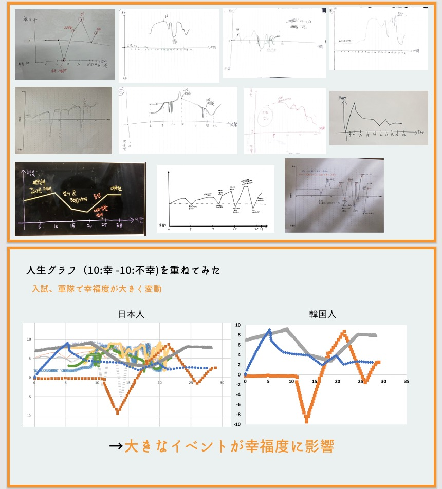
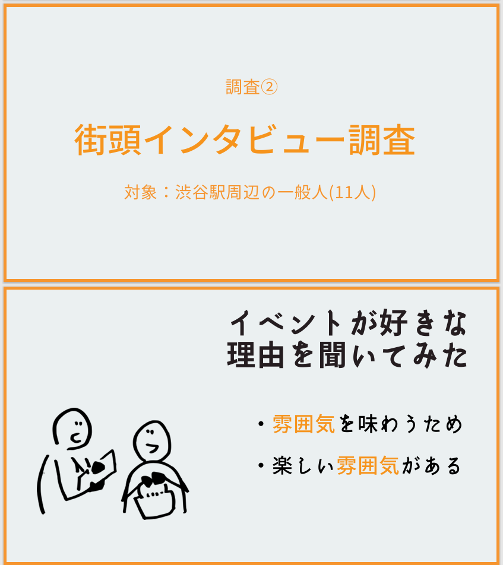
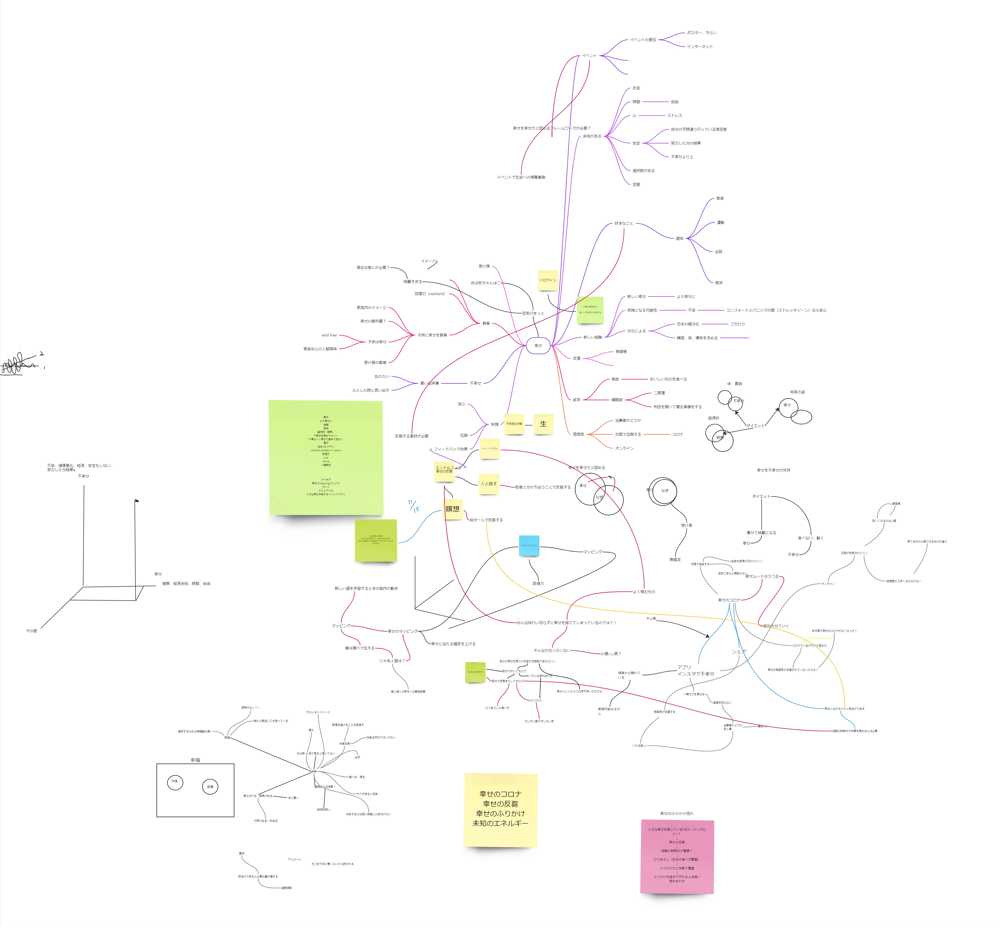
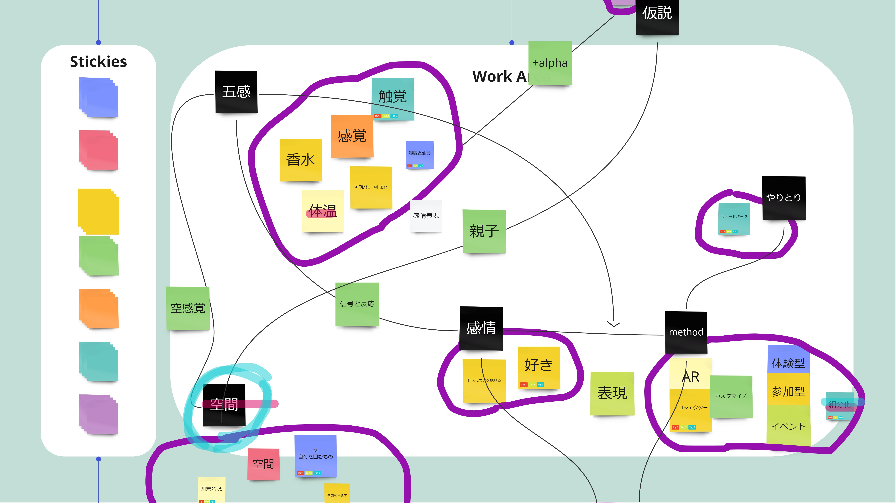
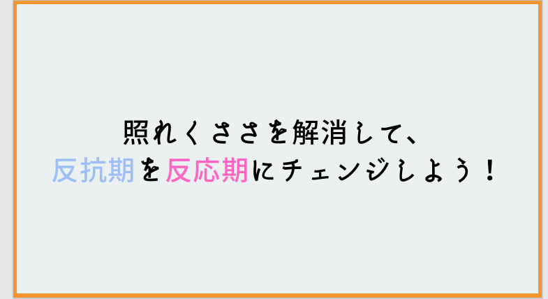
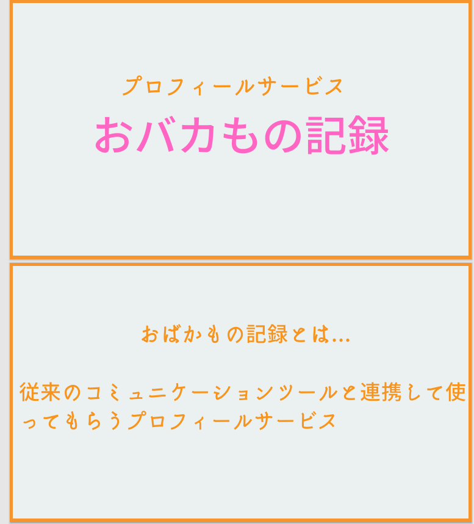

Selected project · Design research
Branco
An exploration of happiness through ethnographic interviews and brand concept development.
Project management · Ethnography · Idea design

Context
Our team participated in Branco, a brand design contest jointly organized by Hakuhodo and the University of Tokyo. We developed a brand concept around happiness, beginning with people's experiences rather than a predefined product.
My contribution
I contributed to project management, ethnographic research, and idea development. The work connected interview material with team discussions and a final concept proposal.
Interviews and idea development
We used interviews and life-history mapping to explore how people describe happiness. These materials informed the team's concept development and presentation.




Concept proposal

